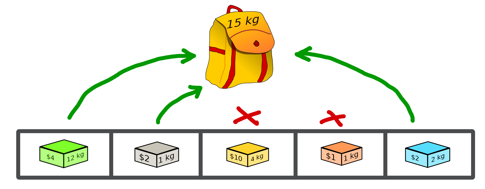

3. Solutions¶
Representing a solution to a specific problem is very important in an optimisation process. In this example, we will always use the knapsack problem as a basis.
In a first step, the management of the solutions by the macop package will be presented. Then a specific implementation for the current problem will be detailed.
3.1. Generic Solution¶
Inside macop.solutions.base module of Macop, the Solution class is available. It’s an abstract solution class structure which:
stores the solution data representation into its
dataattributeget
size(shape) of specific data representationstores the
scoreof the solution once a solution is evaluated
Some specific methods are available:
class Solution():
def __init__(self, data, size):
"""
Abstract solution class constructor
"""
...
def isValid(self, validator):
"""
Use of custom function which checks if a solution is valid or not
"""
...
def evaluate(self, evaluator):
"""
Evaluate solution using specific `evaluator`
"""
...
def fitness(self):
"""
Returns fitness score
"""
...
@staticmethod
def random(size, validator=None):
"""
initialise solution using random data with validator or not
"""
...
def clone(self):
"""
Clone the current solution and its data, but without keeping evaluated `_score`
"""
...
From these basic methods, it is possible to manage a representation of a solution to our problem.
Allowing to initialise it randomly or not (using constructor or random method), to evaluate it (evaluate method) and to check some constraints of validation of the solution (isValid method).
Note
Only one of these methods needs specification if we create our own type of solution. This is the random method, which depends on the need of the problem.
We will now see how to define a type of solution specific to our problem.
3.2. Solution representation for knapsack¶
We will now use the abstract Solution type available in the macop.solutions.base module in order to define our own solution.
First of all, let’s look at the representation of our knapsack problem. How to represent the solution?
3.2.1. Knapsack solution¶
A valid solution can be shown below where the sum of the object weights is 15 and the sum of the selected objects values is 8 (its fitness):
{kind=link}
Its representation can be translate as a binary array with value:
[1, 1, 0, 0, 1]
where selected objects have 1 as value otherwise 0.
3.2.2. Binary Solution¶
We will now define our own type of solution by inheriting from macop.solutions.base.Solution, which we will call BinarySolution.
First we will define our new class as inheriting functionality from Solution (such as child class).
We will also have to implement the random method to create a new random solution.
"""
modules imports
"""
from macop.solutions.base import Solution
import numpy as np
class BinarySolution(Solution):
@staticmethod
def random(size, validator=None):
# create binary array of specific size using numpy random module
data = np.random.randint(2, size=size)
# initialise new solution using constructor
solution = BinarySolution(data, size)
# check if validator is set
if not validator:
return solution
# try to generate solution until solution validity (if validator is provided)
while not validator(solution):
data = np.random.randint(2, size=size)
solution = BinarySolution(data, size)
return solution
Note
The current developed BinarySolution is available into macop.solutions.discrete.BinarySolution in Macop.
Using this new Solution representation, we can now generate solution randomly:
solution = BinarySolution.random(5)
In the next part, we will see how to verify that a solution meets certain modeling constraints of the problem.